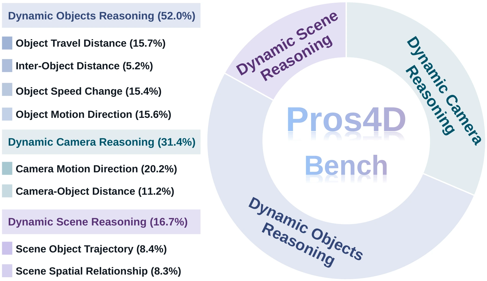

Encode the observed world
Compress entity-specific visual and motion evidence into ordered latent observed states.
Observed dynamicsA shared internal state connects visible motion to scene evolution beyond the observation boundary.
Video understanding tells us what happened. Acting in a dynamic world also requires anticipating what happens next.
Pros4D brings both capabilities into one vision-language model. It compresses observed dynamics into latent observed states, then autoregressively evolves them into latent future states—preserving spatial structure while reasoning across time.
At inference, both tasks use only the same observed video prefix. No external geometric tool calls are needed during question answering.
Dynamic spatial reasoning from monocular video enables vision-language models (VLMs) to understand how 3D environments evolve over time, supporting physical world understanding and embodied intelligence. Existing efforts primarily address observed-dynamics understanding, whereas agents in dynamic environments also require future-dynamics prediction beyond the observation boundary. Moreover, external geometric processing and textual descriptions can increase inference complexity or lose information when representing continuous dynamics. These limitations motivate a shared internal state that preserves observed dynamics and remains predictive beyond the input video. Accordingly, we present Pros4D, a framework for modeling evolving 4D worlds in latent space that unifies retrospective understanding of observed-dynamics with prospective reasoning for future-dynamics prediction. Specifically, Pros4D-Engine derives geometry-grounded supervision and constructs paired examples for both tasks, while Pros4D-Bench evaluates them across eight spatial task categories spanning dynamic cameras, objects, and scenes. At the model level, Pros4D compresses observed dynamics into latent observed states and autoregressively rolls them forward into latent future states. 4D Latent Alignment (4DLA) grounds these states through complementary visual-semantic and geometric supervision, while joint language supervision connects them to task reasoning. Experiments across benchmarks show consistent improvements over strong baselines in both capabilities.
Textual reasoning and continuous latent states work together, connecting visual evidence, spatial structure, and temporal evolution.
Compress entity-specific visual and motion evidence into ordered latent observed states.
Observed dynamicsAutoregressively roll observed states forward to model the future continuation in latent space.
Future dynamicsAlign states with visual-semantic and geometric targets, alongside joint language supervision.
Training-time alignmentGeometry at training. Latent reasoning at inference.
The model answers from the observed video and question, without access to future frames or an external geometry pipeline.
Pros4D-Engine constructs paired examples for understanding and prediction. Geometry determines the answer before the language model verbalizes it.
Eight spatial categories span cameras, objects, and scenes. Both temporal tasks receive an identical observed prefix, with videos separated from training by video identifier.
How does the observer move?
606 questionsIs the camera getting closer?
335 questionsWhich way does the target move?
469 questionsHow does their separation change?
155 questionsDoes the target speed up or slow down?
463 questionsWhat is the target’s endpoint displacement?
472 questionsHow does an object move relative to a landmark?
248 questionsWhich direction does the main object travel?
252 questions
| Spatial task | Observed | Future |
|---|---|---|
| Camera Motion Direction | 503 | 103 |
| Camera–Object Distance | 200 | 135 |
| Object Motion Direction | 279 | 190 |
| Inter-Object Distance | 105 | 50 |
| Object Speed Change | 275 | 188 |
| Object Travel Distance | 279 | 193 |
| Scene Spatial Relationship | 122 | 126 |
| Scene Object Trajectory | 128 | 124 |
| Total | 1,891 | 1,109 |
Consistent gains in both temporal tasks, with transfer to dynamic spatial benchmarks, robot manipulation, and driving scenes.
Pros4D-Bench · comparison with the corresponding backbone
| Model | Overall | Observed | Future |
|---|---|---|---|
| MLLM-4D-8B | 51.7 | 59.3 | 38.7 |
| DynTrace | 54.6 | 57.5 | 49.6 |
| Qwen2.5-VL-3B backbone | 45.4 | 50.9 | 36.0 |
| Pros4D-3B | 62.0 | 63.9 | 58.8 |
| Qwen3-VL-8B backbone | 46.4 | 49.7 | 40.7 |
| Pros4D-8B | 62.9 | 64.9 | 59.5 |
+4.6 pts over the backbone
+9.2 pts over the backbone
+20.91 pts over the backbone
All values are from the accompanying manuscript. Gains are percentage points over the corresponding Qwen backbone. See the paper for the complete comparisons, evaluation protocols, and ablations.
Qualitative examples connect the queried entity to its surroundings and to the order of events.
How does the distance between the camera and the person sitting on the bench change from 7.5 s to 11.2 s?
From the camera’s perspective, which direction does the woman in a grey coat move?